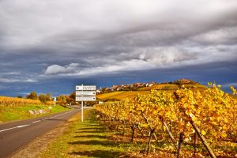
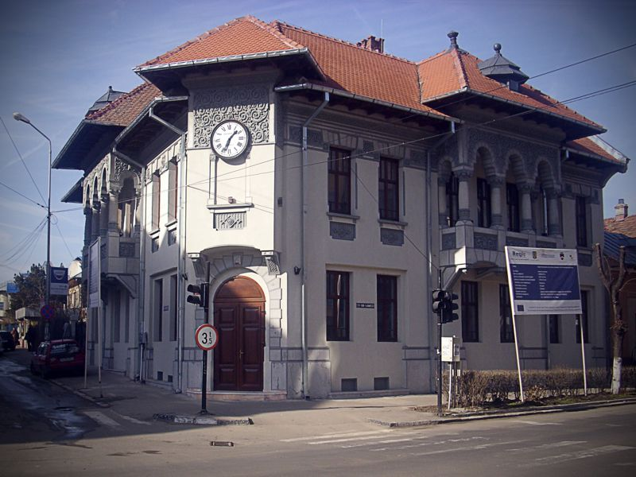
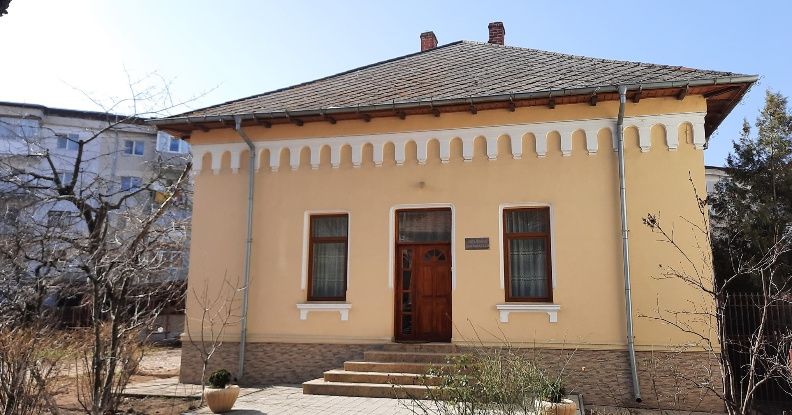
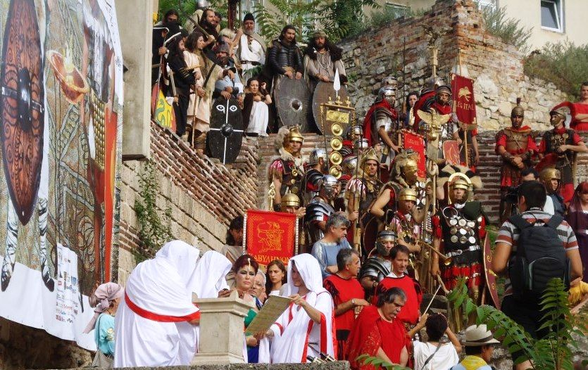
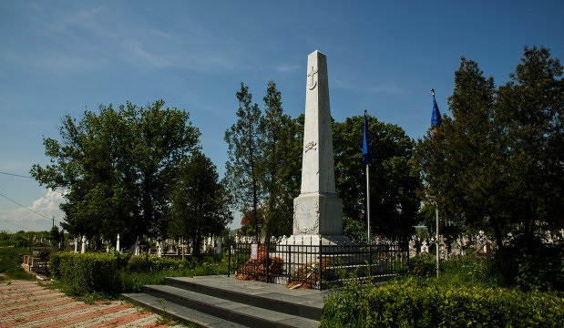

1.Transalpina Vinului

În inima Vâlcii, acolo unde soarele mângâie blând colinele și vița-de-vie își întinde brațele spre cer, se află un drum magic, un tărâm al aromei și al frumuseții: Transalpina Vinului. Este o cale ce leagă cramele Drăgășaniului de cele ale Prundeniului, o șosea ce pare desprinsă dintr-un basm al naturii și al tradiției, cel mai nou drum turistic ce își face loc pe harta județului Vâlcea.
Acest drum, poate cel mai frumos din sudul Vâlcii, șerpuiește elegant prin „pădurile” viticole, călăuzind călătorii într-o lume de vis, unde pământul respiră a vin și istorie. Pe creasta molcomă a dealurilor, soarele își revarsă razele aurii, iar strugurii, asemenea unor perle cristaline, privesc spre răsărit cu promisiunea dulce a unui vin desăvârșit. E o călătorie printr-un peisaj fermecător, unde primăvara adună laolaltă florile de cireș, de vișin, de păr și de măr, îmbrăcând dealurile într-o mantie albă și roz, vestind începutul unei noi povești a naturii.
Transalpina Vinului își începe călătoria desprinzându-se din Drumul Național 64, îndrăznind să urce spre înălțimi, spre culmile unde se naște arta vinului. Alene, drumul se strecoară printre marginile podgoriilor, unde liniștea este acompaniată doar de foșnetul frunzelor și cântecul vântului. Aici, timpul pare să se dilate, iar aerul e îmbibat cu parfum de must, de pământ reavăn și de flori înflorite.
Iar Drăgășani, orașul cu parfum de struguri, se arată călătorului ca o filă de roman vechi, dar mereu actuală. Aici, iubirile Donei Alba încă plutesc în aer, iar eleganța orașului se regăsește în cartierele sale cochete, în parcurile pline de flori și în străzile animate de forfota unei comunități vii. Drăgășaniul este o simfonie a modernității și a tradiției, unde investițiile în spitale moderne, în școli și în bisericile de patrimoniu adaugă o notă de măreție acestui colț de țară.
O plimbare prin parcurile sale sau pe aleile liniștite îți dezvăluie un oraș vibrant, colorat, unde frumusețea fetelor tinere și râsul liceenilor împletesc trecutul cu viitorul. Fiecare floare, fiecare colț al orașului poartă în el sufletul drăgășenenilor, acel sentiment unic de apartenență și mândrie. Și, oricât de trist ai ajunge la Drăgășani, magia locului îți redă seninătatea și te face să pleci cu un zâmbet pe buze.
Transalpina Vinului nu este doar un drum. Este o invitație la descoperire, la visare, la bucuria simplității și a autenticului. O cale ce te poartă spre inima Vâlcii, unde natura și omul s-au unit într-o armonie perfectă, dând naștere unei povești ce merită trăită și spusă mai departe.
2. Muzeul Viei și Vinului

Într-un colț pitoresc al unui oraș cu o tradiție adânc înrădăcinată în istorie, se află o clădire impunătoare ce poartă amprenta unei ere de glorie și dedicație. Aceasta este casa Muzeului Viei și Vinului, o clădire datând din anul 1920, construită cu iscusință de către comerciantul prosper Dumitru C. Popescu. Stilul arhitectonic neo-romanesc al clădirii adăpostește un loc de poveste, unul ce vorbește despre o tradiție mai veche decât timpul însuși, despre o îndeletnicire ce a dăinuit pe aceste meleaguri timp de peste două milenii.
De-a lungul decadelor, această clădire a fost martoră la transformări uimitoare. La început, a fost un spațiu comercial, un loc în care comorile regiunii, dar și ale lumii, erau schimbate și negociate. Apoi, clădirea a devenit un post local de miliție, un punct de siguranță și ordine. Dar în anul 1974, destinul clădirii s-a schimbat din nou, când a fost transformată într-un muzeu dedicat celei mai vechi tradiții ale zonei: viticultura.
Muzeul Viei și Vinului nu este doar o simplă colecție de obiecte vechi, ci o veritabilă călătorie în timp, în adâncurile istoriei viticulturii. Aici, vizitatorii pot descoperi o impresionantă colecție de instalații tradiționale pentru prelucrarea strugurilor, unele dintre ele de o frumusețe și complexitate care încântă ochiul și provoacă mintea. Fiecare obiect, fiecare ustensilă, spune o poveste despre meșteșugul, răbdarea și respectul față de pământ și rodul său.
În vitrinele muzeului, sunt expuse și medalii care au consacrat vinurile din Drăgășani pe mapamond. Printre acestea, se află medaliile obținute la concursuri internaționale prestigioase, cum ar fi cel de la Bordeaux din 1898 și la Expoziția Mondială de la Paris din 1900. Aceste premii nu sunt doar simple distincții, ci dovezi ale unei tradiții viticole care a rezistat testului timpului. Vinurile din Drăgășani au fost recunoscute pe plan internațional, fiind onorate cu Diploma de Onoare și Medalia de Aur, semn al unei calități și rafinamente ce au cucerit și palate regale, dar și inimi de iubitori ai vinului din întreaga lume.
Astfel, Muzeul Viei și Vinului nu este doar un loc de învățătura, ci și un loc de celebrare a unei tradiții care unește trecutul cu prezentul și care promite să trăiască veșnic în fiecare picătură de vin ce își găsește locul în pahare și în suflete.
3. Casa Memorială Gib Mihăescu

În inima orașului Drăgășani, ascunsă între zidurile tăcute ale timpului, stătea o casă veche, dar încă mândră, martoră a unei epoci apuse. Era casa în care, cu aproape un secol în urmă, trăise și scrisese Gib I. Mihăescu, unul dintre cei mai enigmatici scriitori ai literaturii române.
Într-o dimineață răcoroasă de toamnă, un vizitator trecu pragul casei memoriale. Părea doar un turist obișnuit, dar inima îi bătea puternic la gândul că se afla acolo unde, cândva, prozatorul își scrisese poveștile. Camera de lucru era exact așa cum și-o imaginase: pe birou, alături de câteva manuscrise îngălbenite de vreme, se afla o pană de scris, parcă abandonată în mijlocul unei fraze nespuse. O fotografie alb-negru a scriitorului și a soției sale trona pe un raft, iar lângă fereastră, o lunetă veche privea spre orizont, ca și cum Mihăescu încă ar fi căutat să descifreze tainele lumii.
Vizitatorul se apropie de un teanc de scrisori, expuse cu grijă într-o vitrină. Erau fragmente din viața lui Mihăescu, mărturii ale gândurilor sale intime, ale dorului pentru familie și pentru orașul care îi fusese leagăn și refugiu. Cuvintele păreau să freamăte sub sticla rece, păstrându-și forța de altădată.
Se opri în fața unei medalioane militare – un simbol al bravurii sale din timpul Primului Război Mondial. Își imagină tânărul soldat, purtând nu doar arma în mâini, ci și povara unui suflet ce avea să transpună în pagini de roman frământările unei lumi sfâșiate între realitate și visare.
În liniștea casei, vizitatorul simți o prezență nevăzută, o șoaptă venind din trecut. Gib Mihăescu nu murise cu adevărat. Trăia prin scrierile sale, prin fiecare colț al acestei case, prin fiecare privire a celor care îi descopereau opera.
Când ieși afară, aerul toamnei era încărcat cu parfumul viței de vie și al amintirilor. Drăgășaniul rămânea locul unde timpul nu se pierdea, ci doar se transforma în povești nemuritoare.
4 Rusidava

Un oraș antic de negăsit
În inima Olteniei, în actualul municipiu Drăgășani, se află un mister istoric care sfidează arheologia modernă: cetatea Rusidava. Menționată în hărțile Imperiului Roman și în documente vechi, această așezare antică rămâne, până astăzi, nedescoperită oficial. De-a lungul ultimului secol, numeroși cercetători și pasionați de istorie au încercat să găsească urmele cetății, însă toate încercările s-au soldat cu eșecuri sau au fost învăluite în teorii controversate.
Rusidava – un nod comercial important
Rusidava a fost una dintre cetățile importante ale Daciei, un centru economic de prim rang. Situată strategic pe malul râului Olt, ea a funcționat ca un port comercial, unde ambarcațiunile romane acostau aducând sare, lemn de tisă și alte mărfuri prețioase. Datorită acestui amplasament, romanii au dezvoltat două rute comerciale principale: Rusidava-Buridava și Bălcești-Grădiștea-Horezu, facilitând astfel un intens schimb de bunuri și informații între provinciile romane și teritoriile dacice.
Exilul unui împărat roman
Printre evenimentele istorice remarcabile legate de această cetate se numără ascensiunea lui Galerius Valerius Maximianus, viitorul împărat roman. Înainte de a fi numit Caesar de către Dioclețian, Galerius a fost ținta unor comploturi politice și, temându-se pentru viața sa, s-a refugiat în Dacia. Se spune că a locuit timp de doi ani în Rusidava, protejat de legături locale puternice și de geografia favorabilă a regiunii. Această perioadă a exilului său este puțin documentată, dar a jucat un rol crucial în consolidarea viitorului său politic.
Dispariția misterioasă a Rusidavei
După retragerea aureliană din Dacia, în secolul al III-lea, Rusidava a fost treptat abandonată. Unii istorici sugerează că a fost distrusă de invaziile migratoare, în timp ce alții cred că a fost pur și simplu părăsită de locuitorii săi, care s-au mutat în așezări mai sigure. Însă cea mai fascinantă ipoteză este aceea conform căreia cetatea ar fi fost înghițită de apele Oltului. De-a lungul secolelor, râul și-a schimbat cursul de mai multe ori, iar aluviunile ar fi putut acoperi definitiv ruinele așezării antice.
Un secret ascuns sub ape?
O teorie mai recentă sugerează că Rusidava s-ar putea afla sub lacul de acumulare construit în perioada comunistă la Drăgășani. Conform unor mărturii locale, în timpul lucrărilor la baraj, muncitorii ar fi descoperit ziduri antice, vase de lut și monede romane. Se spune că autoritățile au ordonat oprirea temporară a lucrărilor, dar cercetările arheologice nu au fost permise, întrucât construcția barajului trebuia finalizată conform planurilor cincinale. Dacă această ipoteză este adevărată, atunci Rusidava ar putea fi îngropată sub ape, inaccesibilă oricărei investigații viitoare.
O provocare pentru arheologi
Astăzi, Rusidava rămâne un simbol al istoriei pierdute. Arheologii și istoricii continuă să caute dovezi care să confirme existența sa exactă, însă terenul din jurul Drăgășaniului nu oferă răspunsuri clare. Poate că tehnologiile viitoare, precum scanarea cu radar penetrant în sol sau cercetările subacvatice, vor reuși într-o zi să aducă la lumină ruinele cetății. Până atunci, Rusidava rămâne un mister nerezolvat, o fantomă a trecutului care așteaptă să fie redescoperită.
5. Obeliscul din Drăgăşani

Obeliscul din Drăgăşani reprezintă unul dintre cele mai semnificative monumente istorice dedicate eroilor eleni din afara Greciei. Amplasat în județul Vâlcea, acest monument impresionant este un simbol al luptei pentru libertate și un punct de atracție turistică cu o puternică rezonanță istorică.
Ridicat în anul 1881, obeliscul comemorează sacrificiul batalionului sacru elen, decimat de armata otomană în timpul bătăliei de la Drăgăşani, din 7/19 iunie 1821. Această confruntare a marcat un moment decisiv în Revoluția lui Tudor Vladimirescu, în care eteriștii au fost înfrânți, iar visul lor de eliberare s-a spulberat. Doar un mic grup de panduri români, condus de căpitanul Ioan Oarcă, s-a alăturat armatei creștine, într-un act de solidaritate eroică.
Monumentul, realizat în stil egiptean, are o înălțime de trei metri și este unic în peisajul patrimonial românesc. Anual, delegații din Grecia vizitează acest loc pentru a aduce un omagiu eroilor căzuți. Inclus în lista obiectivelor de patrimoniu, Obeliscul din Drăgăşani rămâne un simbol al curajului și al luptei pentru libertate, atrăgând atenția istoricilor și turiștilor deopotrivă.